The viewer in the browser
Every interactive waveform of WaveLens — a page built from a dump, a WaveDrom block in your own page, a VCD dropped on
wavelens/viewer.html — is the same viewer: a bar of tools, a names column, the waves on a canvas, the bookmark lists under
them. This guide goes through it part by part: how to move in time, put cursors, measure, find and highlight signals, mark events,
and take pictures out of it. Navigation follows Questa's wave window; the keys of the lists and the text follow vim.
Opening waves
There are three ways to get waves into a viewer:
- A page built from a dump.
make html WAVES=work/my.vcd(or an FST) writeswork/my.config.jsonandwork/my.html: one self-contained file with every view of the config, each a viewer. How the page and its config are made is the subject of Dump → page. - A dump read in the page. Open
wavelens/viewer.htmlfrom the repository (file://, nothing to build) and drop a VCD on it, or press Open… in the dump group of its bar. Every viewer has that group, a built page too, so you can load another dump into any of them. - WaveDrom JSON in your own page. A
<script type="application/wavedrom">block becomes a viewer; see WaveDrom.
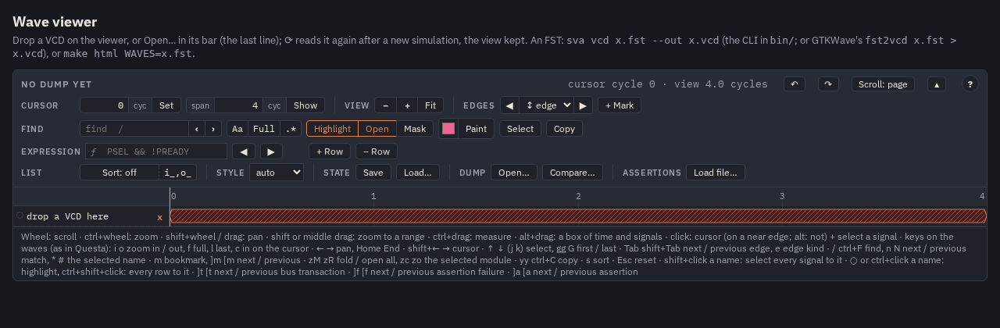
The VCD is read in the browser: its signals grouped by scope (struct, union and interface scopes marked), with their exact
transitions. A large dump is cut to the dumpBudget setting (3 000 000 value changes by default): the scope levels nearest the
top are kept first, and the toast in the title line says how many signals came in; the find counts the ones left out
(no match · 1 not in the page, their names in its tooltip), so a missing signal is not taken for one the simulator did not dump. An FST is binary and is not read in the page: convert
it with sva vcd x.fst --out x.vcd (the CLI in bin/, or GTKWave's fst2vcd x.fst > x.vcd), or build a page
with make html WAVES=x.fst.
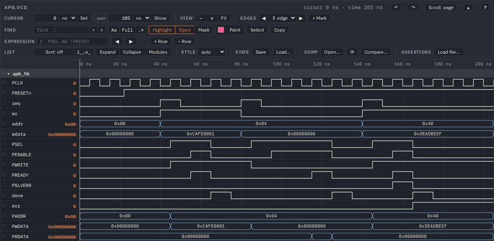
apb_tb is a foldable group; ⟳ appeared next to
Open….⟳ reads the same file again after a new simulation and keeps the view: the window, the cursor, the folding, the
highlight and the bookmarks. In Chrome and Edge the file is picked through the File System Access API, so ⟳ reads what is on the disk
now; other browsers ask for the file again. A saved viewer state (.view.json, see Save and Load)
dropped on a viewer is loaded instead of read as a dump.
Anatomy of a viewer
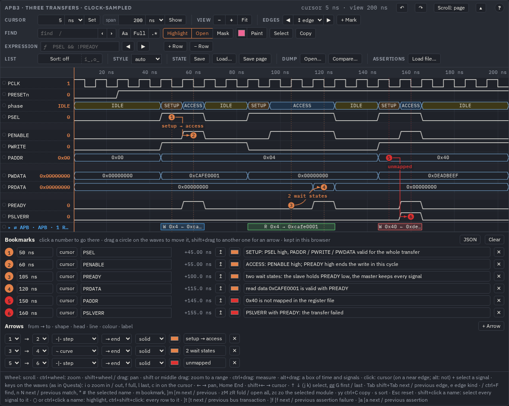
- The title line: the view's title, short messages (toasts: what a click did, a transfer selected, a dump read), at the right the
cursor and the width of the view (
cursor 5 ns · view 200 ns; with a range or a second cursor also its Δ) and the ? button. - The bar: one line per kind of work, the groups described below.
- The names column: one row per signal, groups (modules, protocol channels, assertion groups, bus ports) as foldable header rows. The ○ mark in front of a name highlights it. Hover a name for its full path.
- The value column next to the names: each signal's value at the cursor, in its radix (a long value cut to half the column, its tooltip has all of it).
- The waves: the time axis on top, the cursor as a solid orange line, markers dashed, bookmarks as numbered circles and arrows between them. The pointer over a signal shows its value there, the change into it and the next one.
- The lists of bookmarks and arrows, when the view has some (Bookmarks and arrows).
- The hint line: the mouse and the keys in one paragraph (
"hint": falseleaves it out).
The keys work once the waves have the focus: click the waves or a name first. With ctrl, alt or ⌘ held the keys stay the browser's (ctrl+S saves the page, it does not sort), except ctrl+C, ctrl+F, ctrl+G, ctrl+Z / ctrl+shift+Z / ctrl+Y (undo, redo; in a text field they are the field's), alt+↑ ↓ and alt+shift+↑ ↓ (the order of your groups). A two-key sequence (gg, zM, yy, ]m …) is two keys within a second.
The bar, group by group
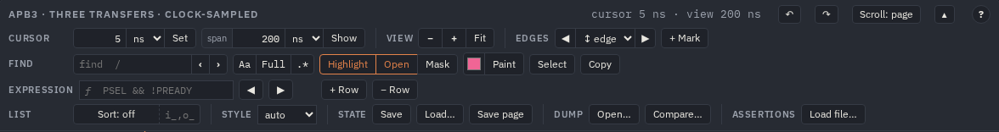
| Group | What it does |
|---|---|
| cursor | A time and its unit, Set puts the cursor there; a span and its unit, Show makes a window that wide around the cursor (The cursor). |
| view | − + zoom out / in, Fit shows everything. |
| edges | ◀ and ▶ step to the previous / next edge of the selected signal, of the kind picked between them; + Mark puts a bookmark at the cursor (Edges). |
| go to | Jump buttons: the view's markers (when there are at most six) and, with assertions, their failures. Only when there is something to jump to (the exact APB view has → done 1, → error …). |
| find | The find field, ‹ ›, Aa Full .*, Highlight, Open, Mask, the colour and Paint, Select, Copy (Find). |
| expression | The ƒ field: an expression of the signals (PSEL && !PREADY), ◀ ▶ to the times it becomes
true, + Row / − Row. It belongs to the assertions: Assertions. |
| list | Sort and the ignored prefixes (Sorting), Expand / Collapse every module, Modules (Modules), Highlight: N ✕ and Hidden: N ✕ when there are such rows. |
| style | The edges: auto, slanted (WaveDrom), vertical (a simulator's), square; kept in this browser for this
viewer. |
| state | Save and Load… what you did in the viewer, Save page the page with it (Save and Load). |
| dump | Open… a VCD, ⟳ read it again (Opening waves), Compare… a second run (Compare two runs). |
| assertions | Load file… reads .sv / .sva files; see
Assertions. |
Only the tools you use
The right button on the bar lists its tool groups with a tick each: a click shows or hides one, Show all
and Hide all do them all. The menu stays open while you pick; Esc or a click elsewhere closes it.
A line of the bar with no group left goes, so a bar of the cursor and the find is two lines high. A hidden find still floats over the
waves on / or ctrl+F. The choice is kept in this browser for this viewer (the setting
toolsHidden, a list of group names, starts a page that way).
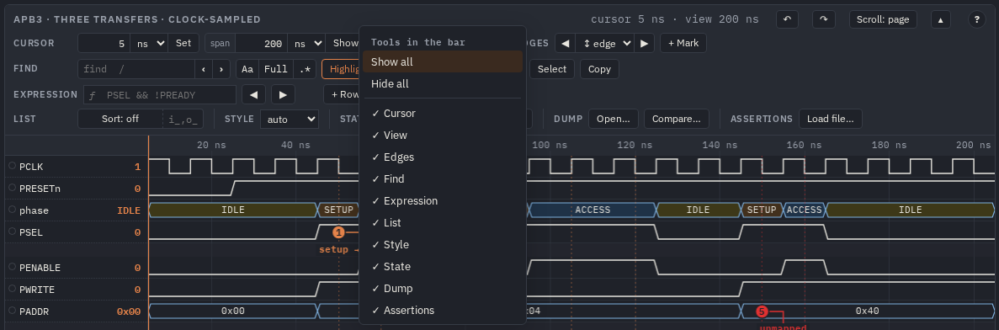
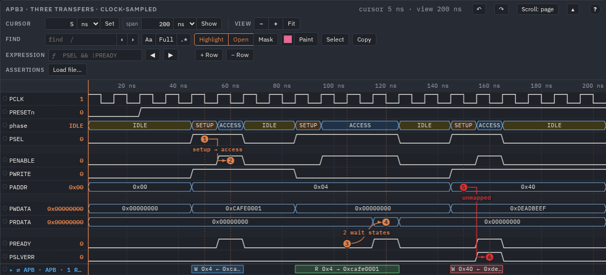
Tooltips and the keys box
Hover any button, field or list of the bar for what it does and its keys; the tooltip shows after 350 ms (in the right button's menu
after 2 s, the menuTipDelay setting, so that it does not get in the way while you read the menu).
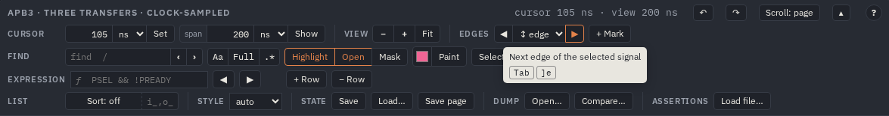
? at the right of the title line (key ?) opens the box of every key and mouse action, the plugins' too (bus transactions, assertions). Esc, ? or ✕ close it.
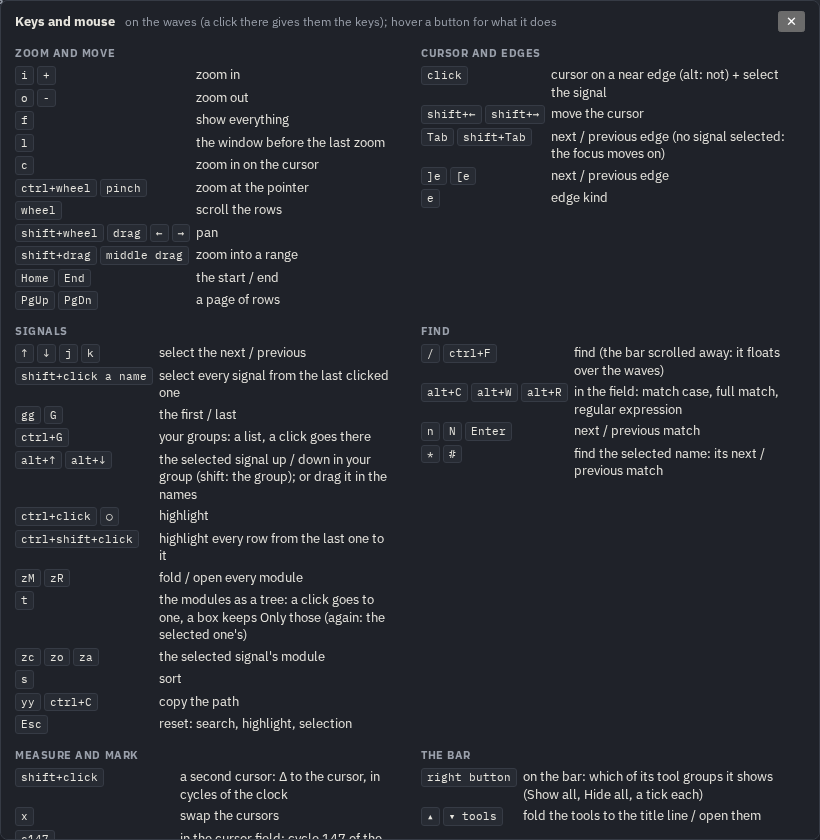
Moving in time
The wheel scrolls the rows, as in Questa; zooming needs ctrl. Set "wheel": "zoom" in the settings if you want the plain
wheel to zoom.
| Do | Mouse | Keys |
|---|---|---|
| zoom in / out | ctrl+wheel or a pinch, at the pointer (a notch ×1.22) | i + / o -, at the middle |
| zoom into a range | shift+drag or a middle-button drag over it | |
| show everything | Fit | f |
| the window before the last zoom | l | |
| zoom in on the cursor | c (half the span, the cursor in the middle) | |
| pan | shift+wheel, a sideways swipe, a drag | ← → (a fifth of the view) |
| the start / end of the dump | Home / End | |
| scroll the rows | the wheel | PgUp PgDn |
With many rows, "maxHeight": "80vh" makes them scroll inside the viewer; the canvas only covers the rows in view, so
any number of rows scrolls smoothly. Scroll: window / page at the right of the bar's title line switches on the fly: with the
page, the rows go by with the browser's scroll bar and the bar sticks to the top of the window, the time axis under it; ▴
folds the tools to the title line while you read, ▾ tools (or /) opens them again. Both are kept in this
browser.
The cursor
A click on the waves puts the cursor there and selects the signal under the pointer. When an edge of that signal is within 8 px of the
click (cursorSnap), the cursor lands exactly on the edge; else on a round time of about a pixel at the zoom you have.
alt+click never snaps. The cursor reads exactly at any zoom (cursor 1.234567 µs), and the value column shows
every signal's value there. shift+← / shift+→ move the cursor a hundredth of the view.
The cursor group places it by number: type a time (1.2us: a unit typed wins over the unit list, or a number in the
listed unit) and press Set or Enter. The span field and Show give a window that
wide centred on the cursor. A cycle diagram (clock-sampled without time) counts in cycles.
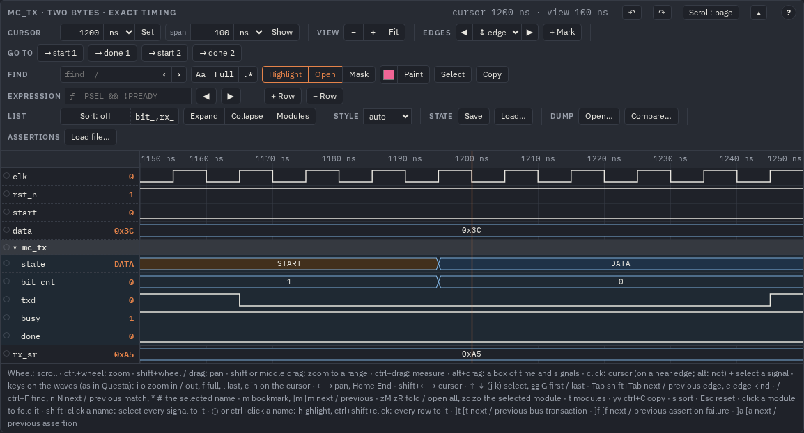
A second cursor
shift+click on the waves (or Second cursor here in the right button's menu) puts a dashed second
cursor, snapped to an edge like the first. The axis and the title line then show the distance to the cursor in time, its frequency, and
in cycles of a clock: the clock of the cycles band when it is on, else the selected signal's when it is a clock, else
the nearest *clk*. x swaps the two
cursors; Esc clears the second one.
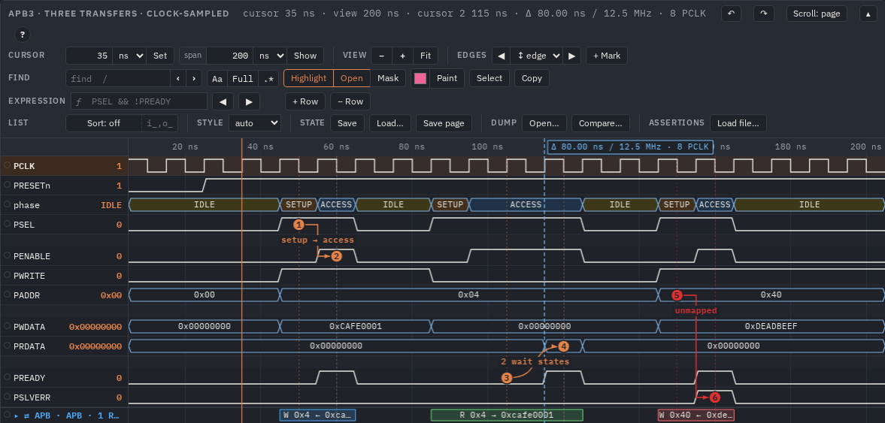
Δ 80.00 ns / 12.5 MHz · 8 PCLK
on the axis and in the title line.Clock cycles
A failure is often told as “cycle 147 after reset”, not as a time. Cycles ▸ in the right button's menu
shows the cycles of a clock in a band under the time axis: every rising edge a tick, numbered from cycle 0 (as many numbers as fit), the
clock named in the header of the names. Show the cycles counts the 1-bit *clk* / *clock*
found, Cycles of PCLK on a 1-bit row counts that one, Cycle 0 at this edge makes the rising
edge at or before the time clicked cycle 0 (the end of reset, a trigger), Reset the cycles gives back the page's
settings. With the band on, the title line says the cursor's cycle (cycle 6 ↑PCLK) and the second cursor's Δ counts that
clock. Type c147 (or cycle 147, c-3) in the cursor field to go to that cycle's edge; it works with
the band off too. The pictures (PNG, SVG) draw the band; the settings are cycles, cycleClock,
cycleZero, and the command is {"op": "cycles", "on": true, "clock": "PCLK", "zero": "50ns"}.
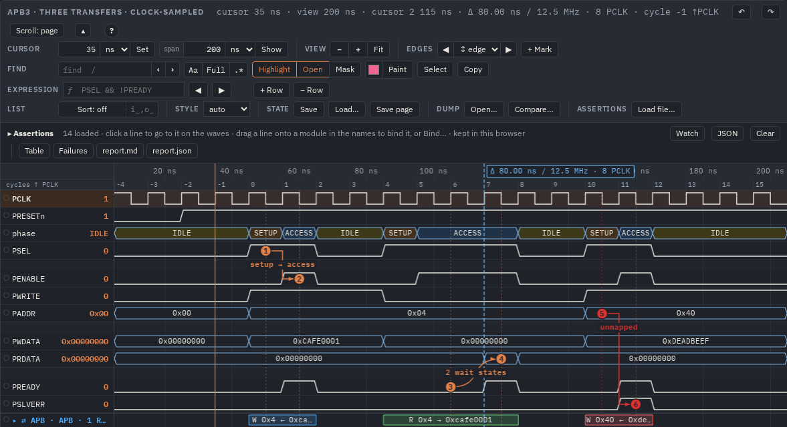
Compare two runs
Compare… in the bar's dump group reads a second run's VCD over these waves: a red band where a signal differs, ≠ on its name, a struck name for a signal the second dump lacks, ]d / [d to the next / previous difference, ≠ N ✕ to stop. On exact waves only. The whole story with pictures: Compare two runs.
Edges and values
Select a signal (click its name or its row; ↑ ↓ or j k select the previous / next one, gg / G the first / last). Then step through its edges, as in Questa:
- Tab / shift+Tab, ▶ / ◀, or ]e / [e: the cursor to its next / previous edge, the view follows. With no signal selected, ◀ ▶ take the edges of every shown signal (and Tab moves the focus on, as usual).
- The list between ◀ and ▶ picks the kind (e cycles it): ↕ edge (any change; every value change on a bus), ↑ rise, ↓ fall, = value, ✕ X / Z.
- = value opens a field:
0x40,'h40,8'd64,64,-3,'b101, a literal with x / z compared bit for bit ('b10x1,8'hx5), or a text such as an enum label (ACCESS). Enter / shift+Enter (or ▶ ◀) go to the next / previous time the selected signal becomes that value (none selected: any shown signal). - X / Z finds the next / previous x or z of the selected signal (a bus with x or z bits too) or of any shown one: the first X after reset, from the reset's edge.
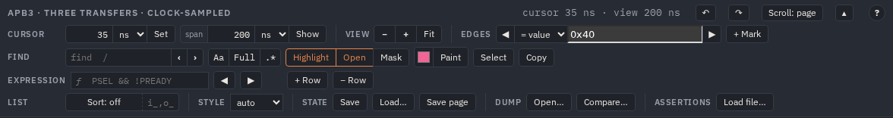
0x40 in the field: ▶ goes to the next time PADDR becomes 0x40.Measuring a range
ctrl+drag on the waves measures: the range's ends snap to the edges of the signal under the pointer (hold alt: they do not), the range is shaded, and its Δ shows on the axis and in the title line, with what the signal did in it:
- a bit: its rising edges and the frequency of a period that long (
Δ 20 ns / 50 MHz · 2 ↑ PCLK); - a bus: its changes and the number of values it took (
Δ 80 ns / 12.5 MHz · 7 changes of PADDR (4 values)).
The signal is the one the range was measured on, else the selected one. ctrl+click or Esc clears it.
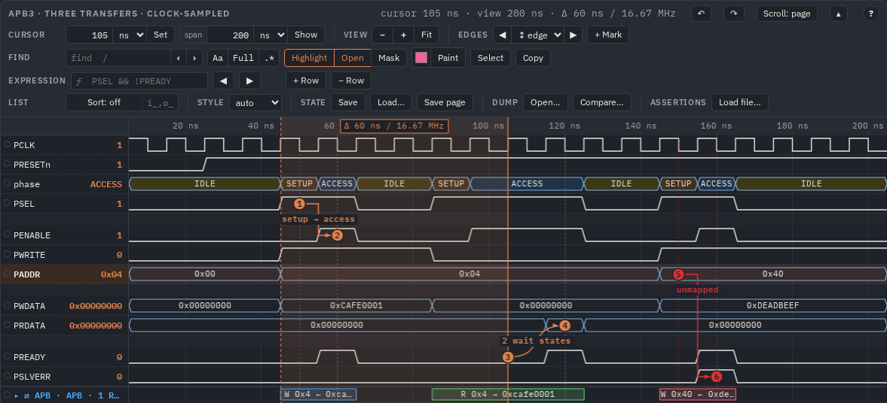
Δ 60 ns / 16.67 MHz on the axis.The right button's menu
The right button does what ctrl+drag does — a drag measures a range, a click takes none — and then opens a menu for the range, the
picture and the row under the pointer. Esc, a click elsewhere or a choice closes it; "contextMenu": false leaves
the right button to the browser.
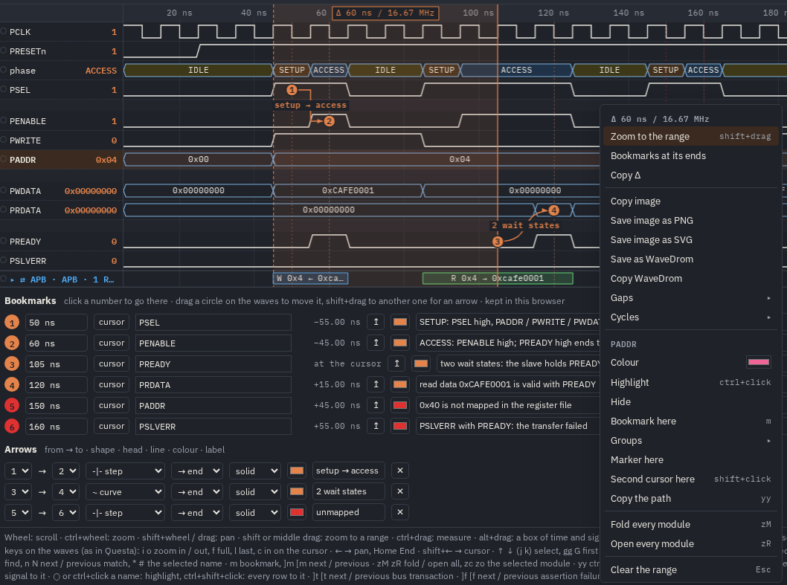
| Item | What it does |
|---|---|
| The range (when there is one) | |
| Zoom to the range | the window becomes the range (shift+drag does it directly) |
| Bookmarks at its ends | two bookmarks and a ↔ arrow labelled with the Δ |
| Copy Δ | the length of the range to the clipboard |
| The picture — the range (else the window) of the rows: a selected run, else the highlighted rows, else the ones on the screen | |
| Copy image | a PNG to the clipboard |
| Save image as PNG / SVG | a file named after the view's title. Drawn as the viewer shows the waves (folding, colours, bookmarks, cursor) with the names and the axis, the page's colours written in, so the SVG opens anywhere |
| Save as WaveDrom / Copy WaveDrom | the same signals over the range as WaveJSON (<title>.wavedrom.json):
one cell per cycle of their clock (at most 2048: a longer range is cut there, said in the foot and the toast), buses as
= with their values in the radix shown, a group per module; see
WaveDrom |
| Gaps ▸ | a submenu: the picture and WaveDrom leave out the idle stretches of a long range. The whole story with pictures is in Gaps |
| The row under the pointer | |
| Colour | a colour picker: the trace, the bus outline and the name; Its own colour takes the paint off |
| Radix | a bus with the dump's values: the page's, auto hex dec signed bin oct ascii float, fixed q (unsigned) and
fixed sq (signed) with a field for the fraction bits |
| Analog (step plot) | the bus as a step plot three rows high, between its smallest and largest value in its radix (signed, float, fixed); As a bus turns it back |
| Highlight | as ctrl+click (Highlight) |
| Hide | leaves the row out; Hidden: N ✕ in the bar, or Show the hidden in this menu, brings it back |
| Fold its module | on a signal; on a module row: Fold this module / Open this module (and Highlight, Hide it all) |
| Bookmark here | a bookmark on this signal at the time clicked |
| Marker here | a dashed line across every row with a label at the top, yours (Bookmarks and arrows) |
| Groups ▸ | Into “…” a group of yours, New group with it (of the N selected), Out of …, Delete this group, Go to any group (Your groups) |
| Cycles ▸ | Cycles of PCLK on a 1-bit signal, Cycle 0 at this edge, Reset the cycles (Clock cycles) |
| Second cursor here | as shift+click; Clear the second cursor when there is one |
| Copy the path | the full hierarchical path |
| Every row | |
| Fold / Open every module | zM / zR |
| Modules…, Locate module in tree | the Modules panel, opened at the module of this row (Modules) |
| Pause / Resume Only, Clear Only | when Only keeps some modules |
| Show the hidden (N) | every hidden row back |
| Clear the range | Esc |
On a highlighted row, the colour, the radix and Hide go to every highlighted row; on a row of a selected run, to every selected one. The radix, the paint and the hidden rows are kept in this browser and in a saved state.
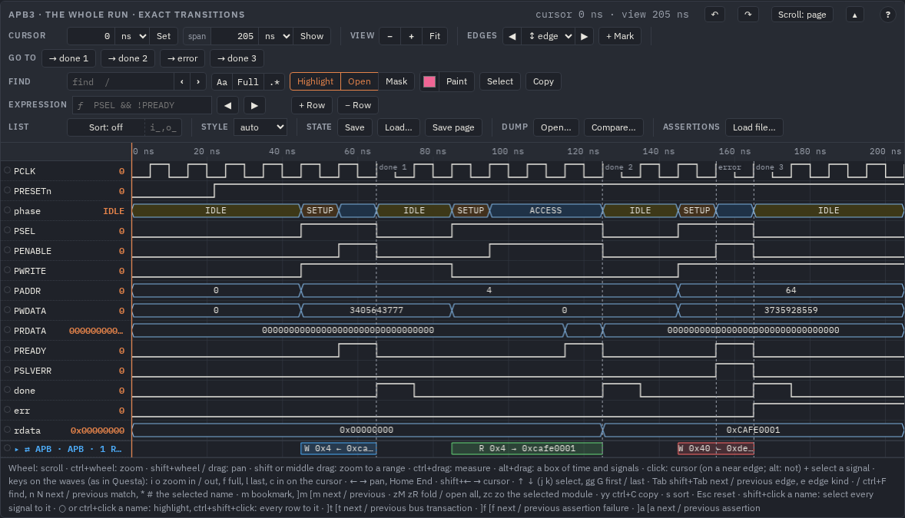
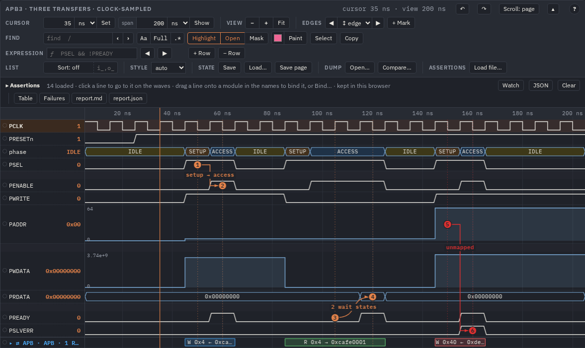
A picture or a WaveDrom file is what the viewer shows: fold a module, hide rows, highlight the few you want or select a run, measure the range — then save. The static SVG of a page draws the same way.
Selecting and highlighting rows
A run of rows
shift+click a name: every signal from the last one clicked to it is selected (tinted, nothing dimmed, the tint inside bus values too). alt+drag on the waves draws a box: its time becomes the range, the signals it touches are selected, and the menu opens. The menu's colour, radix and Hide then apply to the whole run, and the picture and WaveDrom take it.
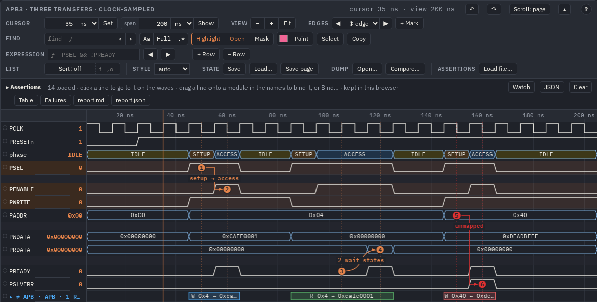
Highlight
The ○ mark in front of a name, or ctrl+click on it, puts that signal — or a whole instance, on a module row — in front: the mark
fills, the rest is dimmed (dim, 0.3) but stays readable. ctrl+shift+click highlights every row from the last one to
it. Several instances at once take different colours. Highlight: N ✕ in the bar or Esc clears it;
"highlight": ["tb.dut.u_tx"] in the config starts a page that way.
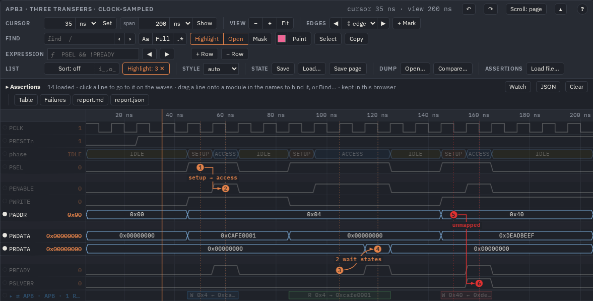
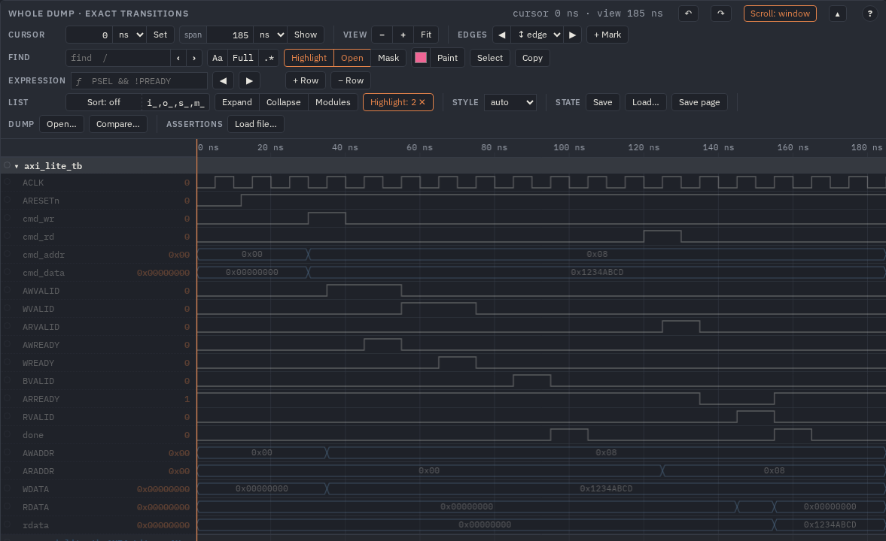
u_master and u_slave in front,
the testbench's own signals dimmed.Find
The find field (/ or ctrl+F) matches the typed letters in order anywhere in a name, as fzf does:
awvd finds AWVALID. A word with a . runs over the full path (dev.fifo); words
separated by spaces must all match. Matched letters are underlined and the count shows next to the field.
- Type the query; Enter, › or n go to the next match, shift+Enter, ‹ or N to the previous one, each scrolled to the middle of the waves.
- Highlight (on by default) dims the rows without a match; Open (on by default) folds every module without one.
- Paint colours the found signals (and the highlighted ones) in the colour next to it — kept in this browser; Unpaint takes it off. Copy copies the found rows' full paths, one per line.
- Mask leaves only the found rows on the waves, with the modules on the way to them (a found module with what is in it). The search still runs over every row; ending it, or Mask off, brings them all back.
- Select selects the found signals, as shift+click does (ctrl+click on it: adds them to the selection there was). The right button on one of them then acts on all of them: New group of the N, colour, radix, Hide, the picture.
- Esc ends the search; the folding from before it comes back, with the way to the match you stepped to kept open.
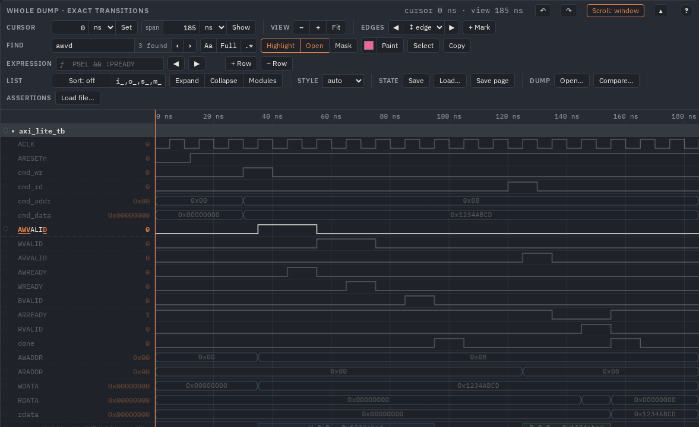
awvd on the generated AXI-Lite page: 3 found, the letters underlined in each
AWVALID, the rest dimmed.Three toggles change how a word matches, as in grep or VS Code:
| Toggle | Key in the field | Meaning |
|---|---|---|
| Aa | alt+C | the case matters |
| Full | alt+W | a word is the whole name (PSEL finds PSEL,
not PSELx; u_slave.ready: the end of a full path) |
| .* | alt+R | a regular expression (JavaScript, as grep -E;
\<ready\> as in vim) tried on the name, the dump's leaf name and the full path; a bad one says so in the count |
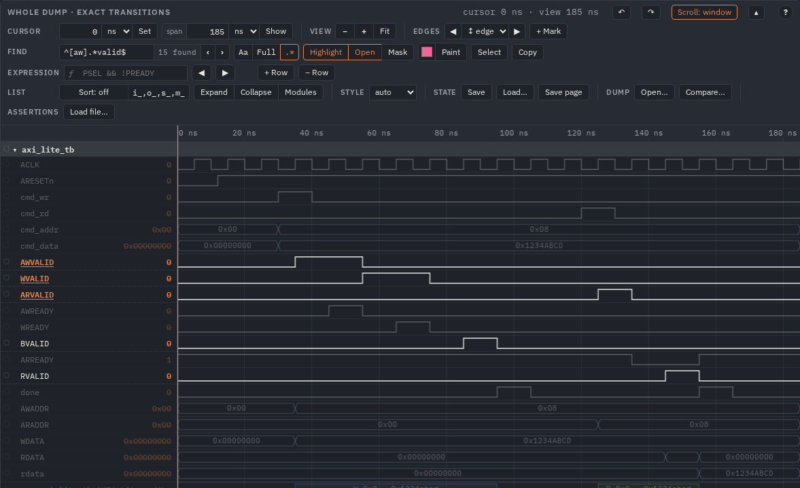
^[aw].*valid$, case ignored: AWVALID, WVALID, ARVALID match by name; BVALID and
RVALID match too, by their full path axi_lite_tb.BVALID.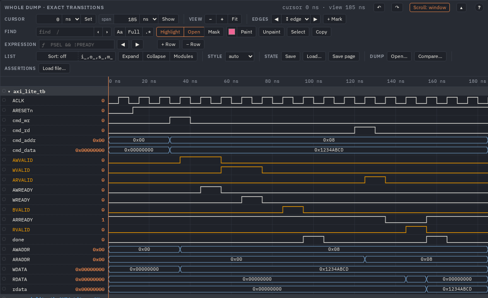
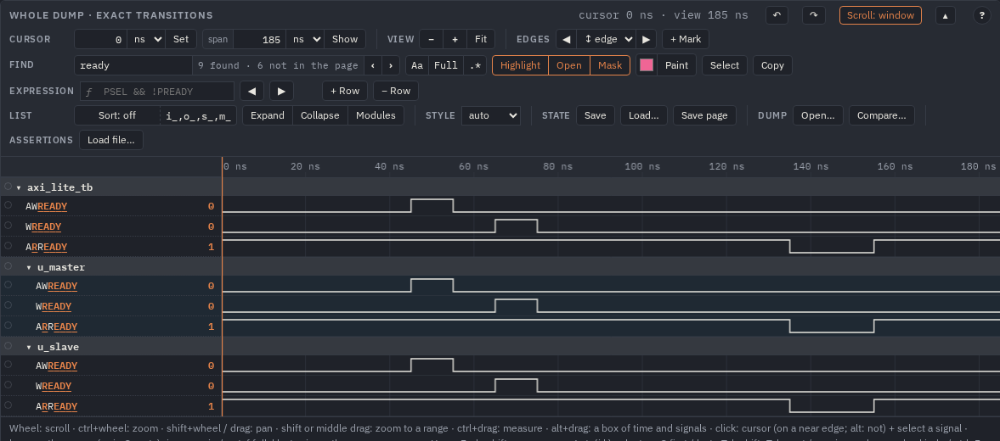
ready: only the matches stay on the waves, with the modules on the way to them.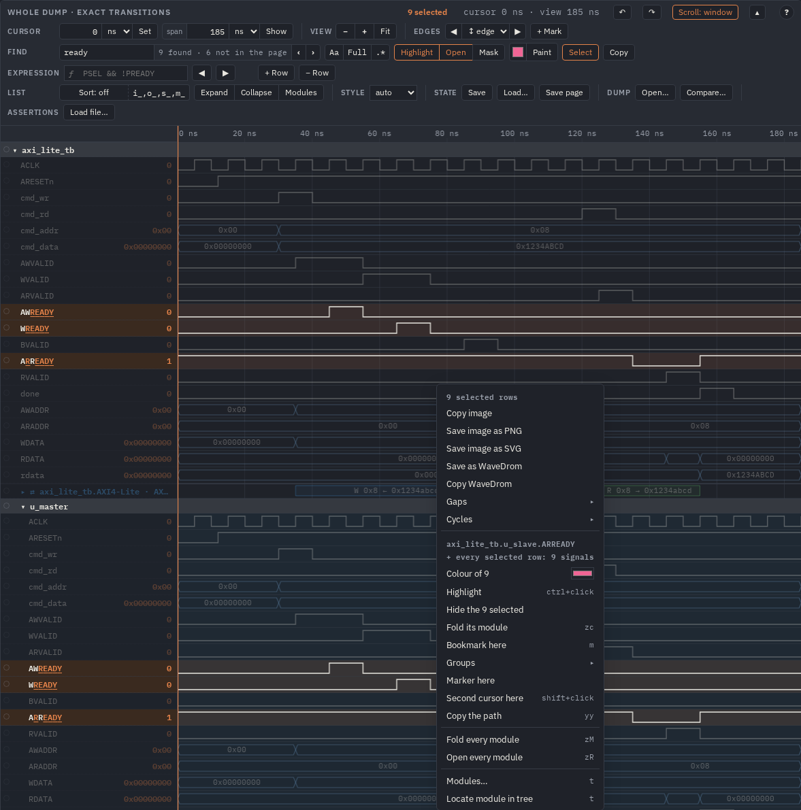
* / # search for the selected signal's name and go to its next / previous match (vim's word under the cursor).
When the bar has scrolled out of sight, / floats the find group over the waves; ✕ or Esc puts it back. The starting
state of the toggles comes from the settings findHighlight, findOpen, findMask, findCase,
findWord, findRegex.
Hierarchy and folding
In a page made from a whole dump ("hierarchy": true, what mkconfig.py writes) every scope is a group: module rows
are bold on a darker band, and neighbouring modules alternate between two backgrounds (moduleShading), so you see where one
instance ends. A click on a module row folds or opens it; Expand / Collapse in the list group
open or fold all of them.
| Keys | Fold |
|---|---|
| zM / zR | fold / open every module |
| zc / zo / za | fold / open / toggle the module of the selected signal |
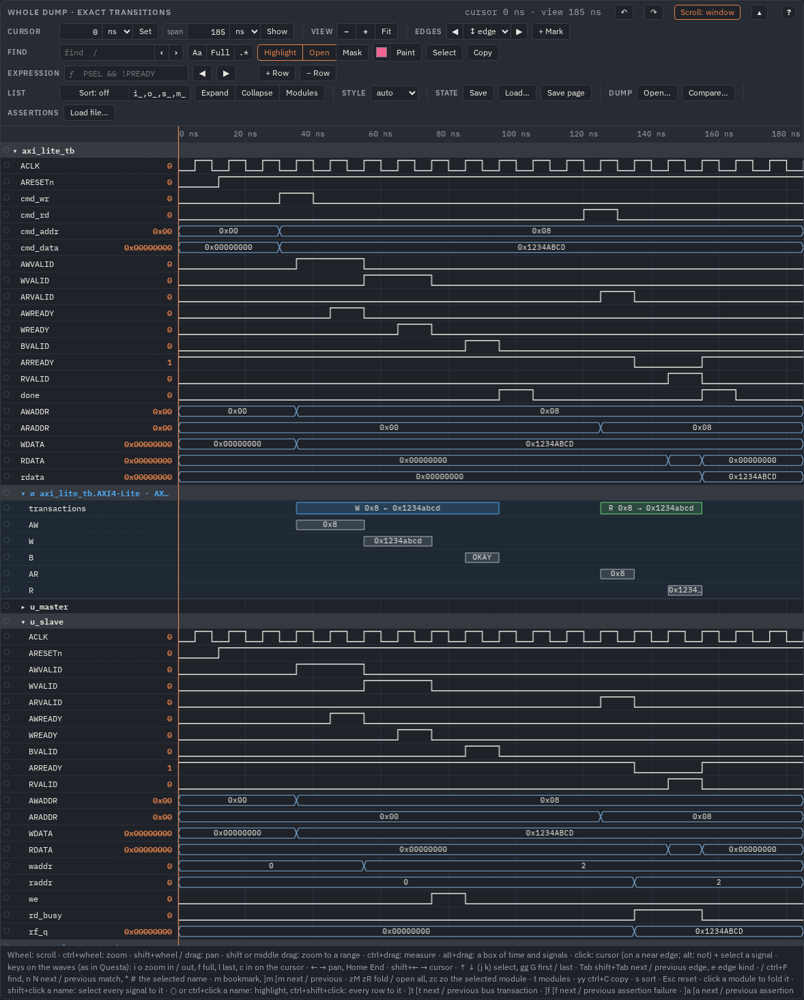
u_slave open, u_master folded to its
one row, the bus port ⇄ AXI4-Lite among the testbench's rows.The settings fold (groups folded at start: true, a depth, or paths), groupOrder (signals first,
sub-modules first, or the file's order) and groupColors (one colour per module or channel) shape this further; see
Dump → page.
The Modules panel and Only
t (Modules in the list group) opens the page's modules as a tree over the viewer. A click on a module goes to its signals; a box drawn over a few keeps Only those on the waves, the hierarchy around them kept as headers. Only: N modules ‖ in the bar pauses it, ✕ clears it. The whole story with pictures: Modules.
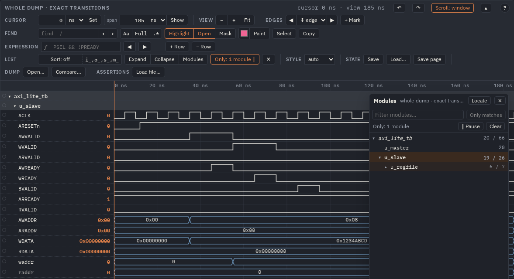
u_slave picked in the tree: the testbench stays as a header on the way to it, its
own signals and u_master gone.Your groups
The right button's Groups ▸ puts the signal clicked (or the highlighted, the selected ones) Into a group of your own or a New group: a folder at the top of the names with its signals in your order. They stay in their modules too; radix, colour, bookmarks and highlight are the signal's. Out takes them out, the header's Delete this group removes it, Go to (or ctrl+G) opens one, brings it to the middle and selects its first signal.
The order is yours. alt+↑ / alt+↓ move the selected signal (a selected run of them, as one block) one place in
its group, or the row of the names with the focus (a group's header: its group);
alt+shift+↑ / alt+shift+↓ move the whole group among yours. Drag a signal of a group, or a group's header, in
the names: a line shows where it goes — between two signals, at the end of another group of yours (it moves there), or before another
group. Each move is one step to undo. A drag over the other names selects their text, as before (ctrl+C copies the
paths). The groups are kept in this browser and the saved state; the command is {"op": "group", "name": "ctl", "signals":
["PSEL", "PENABLE"]}, "move": "up" for its place.
Sorting
Sort (s) cycles off → A→Z → Z→A. The prefixes in the field next to it (i_,o_) are skipped
when names are compared and drawn dimmed, so i_data sorts under d. Groups move as a block and are sorted inside.
The settings: sort, sortIgnore, sortButton.
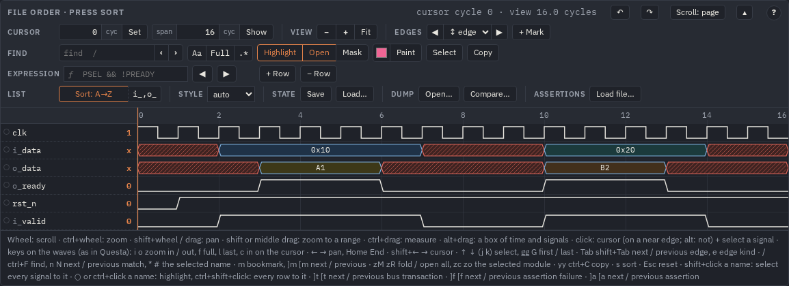
Packed structs
A packed struct is one row {} with its whole value and a row per field under it. It comes from an FST written by Verilator
with --trace-structs (a struct scope of the dump), or from mkconfig.py --sv, which reads
typedef struct packed from the sources and writes the "fields" of a vector.
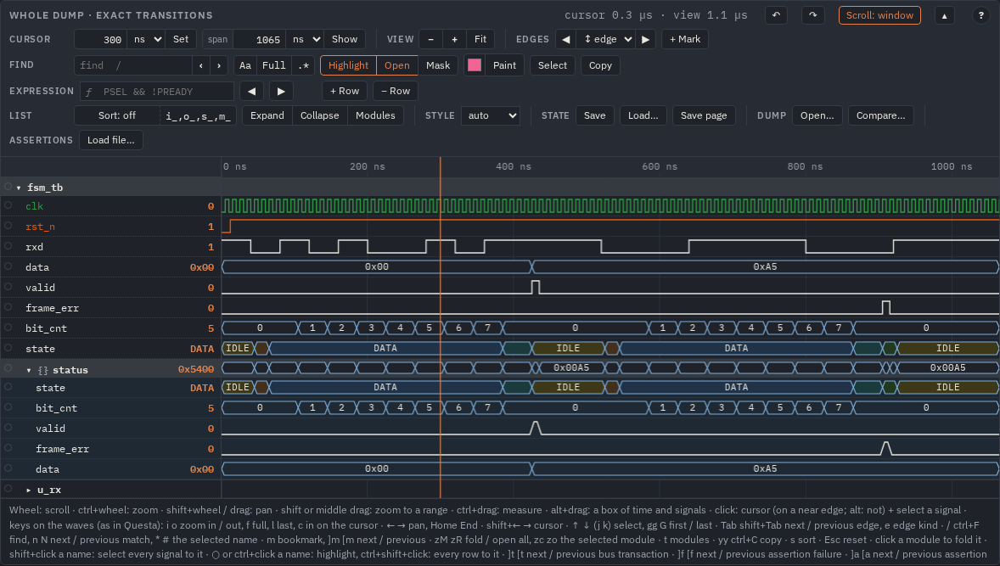
{} status = 0x5400 at the cursor, its fields state, bit_cnt,
valid, frame_err, data under it.Bookmarks and arrows
A bookmark is a numbered circle on a signal at a time, with a colour and a text: the event you want someone to look at. An arrow joins two bookmarks with a label — a latency, a cause and its effect.
- Select a signal, put the cursor near the event and press + Mark or m: a bookmark, snapped to an edge of that signal. Bookmark here in the right button's menu puts one where you clicked.
- Type its text in the list under the waves; change its time (
250ns,85.12us), its signal (empty: the time axis) or its colour there. cursor moves it to the cursor; the Δ column shows its distance from the cursor. - Drag a circle on the waves to move it. shift+drag from one circle to another draws an arrow; or + Arrow joins the last two.
- Pick the arrow's shape (
- ~ -~ ~- -| |- -|-: straight, curve, curve late / early, corner, step), head (→ end, ↔ both, ← start, none), line (solid, dashed, dotted), colour and label.
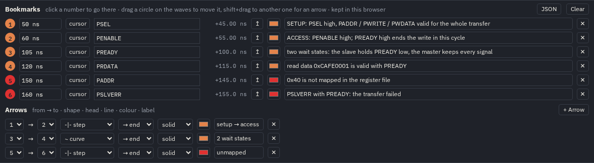
-|-) and one a curve.Arrow labels get a thin lane of their own between the signals, so they cover no value; an arrow between two bookmarks of one signal is a
dimension line in that lane. A circle dragged onto the top quarter of its row (or ↥ in its line) is lifted into the lane above the
signal with a leader down to it ("lift": true in the JSON).
1 … 9 go to that bookmark (its signal selected), ]m / [m to the next / previous one in time;
a click on a number in the list does the same. The bookmarks are kept in this browser; JSON gives the
"bookmarks" and "arrows" lists to paste into a view of the config, so the built page — and its static SVG — carries
them. Clear forgets this browser's bookmarks and arrows (the page's own come back on reload; your markers
stay).
Save and Load
Save downloads what you did in the viewer as <title>.view.json: the time window and the
cursor, the order and its prefixes, the folded modules, the highlight, the paint, the selected signal, the search, the bookmarks and
arrows, the radix, analog and hidden rows, the second cursor and the range, the gap settings, the assertions (files loaded or edited in
the page, with their text, and the bindings) and the ƒ rows. Load… (or dropping the file on a viewer) reads it
back — after a reload, in another browser, or on other waves: what they lack is left out and counted in the title line. A state says
what is not there too ("cursor2": null, "range": null, the edge kind): loaded, it clears them; a key a
state leaves out (an older one, one written by hand) keeps what the viewer has.
The file's "config" (sort, sortIgnore, fold, highlight, the find
toggles …) pastes into a config file as it is; times are in model units (ps).
Save page downloads the page itself, <page>.view.html, with your view written into it:
one file to send. Whoever opens it — in another browser, on another machine — sees the bookmarks, arrows, groups, colours, highlight,
cursor and window, the assertions and ƒ rows you had; the waves are the page's as they were, the live link to an agent and its token
are left out. It is the page's edits block that tools/viewedit.py writes, a new revision: what the person then changes
stays theirs. It is there on a page that is all in itself (make html, mkhtml.py); a page with
wavelens.js beside it, or a dump opened in the page (Open…), keeps its view with
Save. The file carries what you did: your assertion files' text, notes, the search.
Undo and redo
ctrl+Z (or ↶ in the bar's title line, there with the tools folded too) takes back the last change of what you edit in a viewer: bookmarks and
arrows, markers, your groups, colours, radix, analog and hidden rows, the highlight, the edge style, the scroll and the folded tools,
the gaps and the cycles. ctrl+shift+Z or ctrl+Y (↷) does it again. A step is what one
action changed: a menu item, a colour picked, a bookmark dragged, a batch of commands from a script or a live agent; the toast names
it (undone: radix, hidden). The cursor, the window, the selection and the search are not steps (move them back with
l, the bookmarks, Esc). A text typed (a bookmark's, an arrow's label) is one step when its field is left; in a
text field ctrl+Z is the field's own. On another keyboard layout the keys go by their place (ctrl+Я is ctrl+Z). The history starts when the page opens (with
the page's edits in) and keeps 100 steps; a new change after an undo drops what could be redone.
Themes
Three themes: light (warm paper), white (black traces, for print and slides) and dark. They follow the system
(prefers-color-scheme) unless set: the theme button in a generated page's header, <html data-theme="white">,
WaveLens.setTheme('dark'), or "config": {"theme": …}. Every colour is a CSS custom property; see
Dump → page for colours per signal, group and module.
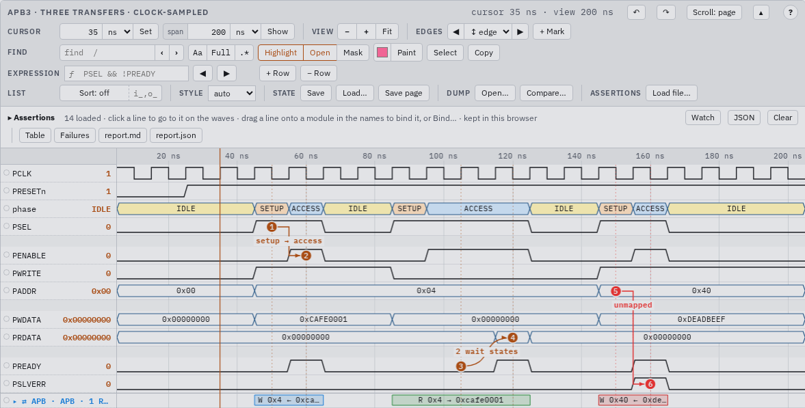
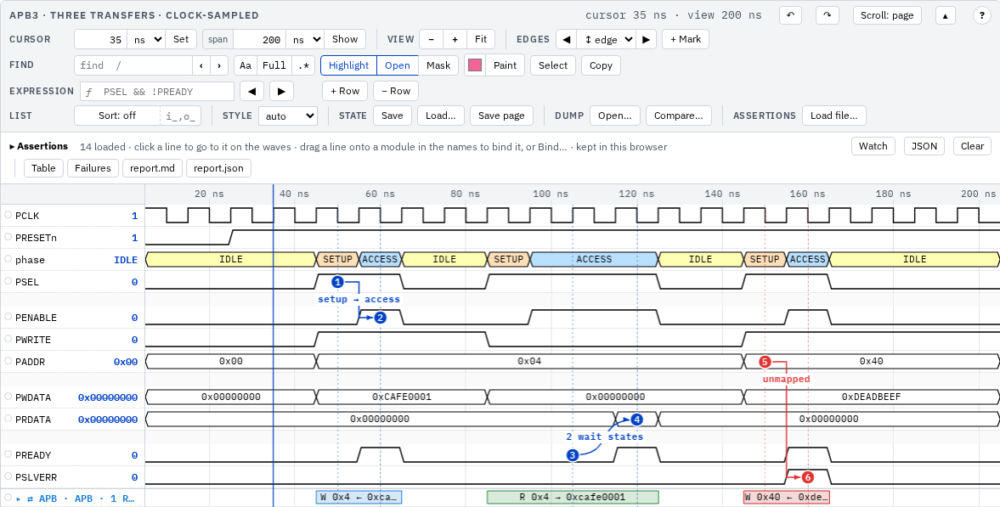
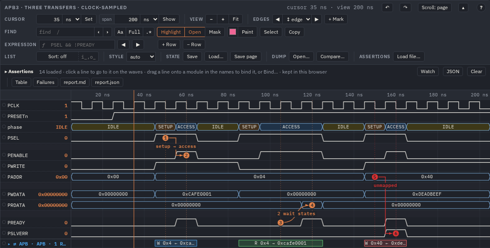
Copying, Esc and printing
- yy or ctrl+C on the waves copies the selected signal's full path (or the highlighted ones'); during a search ctrl+C ends the search instead. Names selected with the mouse copy as full paths, one per line.
- Esc anywhere in the viewer clears the search, the highlight and the selection (and a range, a second cursor, a menu); the time window stays.
- The browser's print (ctrl+P) draws every row of every viewer — not only the part in view — with its title and cursor readout; the bar's tools are left out.
All the keys
| Key | Action | Key | Action |
|---|---|---|---|
| wheel | scroll the rows | ctrl+wheel, pinch | zoom at the pointer |
| shift+wheel, drag, ← → | pan | shift+drag, middle drag | zoom into a range |
| i + / o - | zoom in / out | f / l | show everything / the window before the last zoom |
| c | zoom in on the cursor | Home / End | the start / end |
| click | cursor (on a near edge; alt: not) + select the signal | shift+← shift+→ | move the cursor |
| Tab / shift+Tab, ]e / [e | next / previous edge | e | edge kind |
| ↑ ↓, j k | select the previous / next signal | gg / G | the first / last signal |
| PgUp PgDn | a page of rows | s | sort off → A→Z → Z→A |
| /, ctrl+F | find | n N, * # | next / previous match; find the selected name |
| shift+click the waves | a second cursor | x | swap the cursors |
| ctrl+drag | measure a range (ctrl+click: clear it) | right button | a range and the menu |
| alt+drag | a box: time range and signals, then the menu | shift+click a name | select a run of signals |
| ○, ctrl+click a name | highlight | ctrl+shift+click | highlight every row to here |
| m | bookmark at the cursor | ]m [m, 1 … 9 | next / previous bookmark, bookmark n |
| zM / zR | fold / open every module | zc zo za | the selected signal's module |
| t | the Modules panel (Only) | ctrl+G | the list of your groups |
| yy, ctrl+C | copy the path | Esc | reset: search, highlight, selection |
| ]t [t | next / previous bus transaction (Bus transactions) | ]f [f, ]a [a | next / previous assertion failure, assertion (Assertions) |
| ctrl+Z | undo (Undo and redo) | ctrl+shift+Z, ctrl+Y | redo |
| alt+↑ alt+↓ | move the selected signal in its group of yours | alt+shift+↑ alt+shift+↓ | move the group among yours |
| ]d [d | next / previous difference (Compare) | ], [ alone | nothing: the first key of a pair |
| ? | the keys box | hover a control | what it does, its keys |